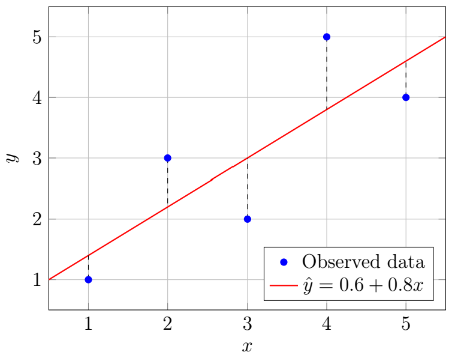

Chapter 6: Correlation and Regression
Section 6.3: Linear Regression
Correlation measures the strength and direction of a linear relationship between two variables. However, correlation alone does not provide a way to predict one variable from another. Linear regression uses the relationship between variables to construct an equation that can be used for prediction.
The Linear Regression Model
Definition: Response and Predictor Variables
In linear regression, the variable being predicted is called the response variable, often denoted by \(y\). The variable used to make the prediction is called the predictor variable, often denoted by \(x\).
The goal of linear regression is to find a line that best describes the linear relationship between \(x\) and \(y\).
The Estimated Regression Equation
The equation of a straight line is \(y=mx+b\), where \(m\) is the slope and \(b\) is the \(y\)-intercept.
In statistics, the estimated regression equation is written as
\[\hat{y}=b_0+b_1x,\]where
- \(\hat{y}\) is the predicted value of the response variable,
- \(b_0\) is the estimated \(y\)-intercept,
- \(b_1\) is the estimated slope.
The symbol \(\hat{y}\) is used because the regression equation provides an estimate of \(y\), not the exact observed value.
Slope Interpretation
The slope \(b_1\) is the predicted change in the response variable for each one-unit increase in the predictor variable.
\[b_1=\frac{\text{change in }y}{\text{change in }x}\]If \(b_1>0\), the regression line has a positive slope and \(y\) tends to increase as \(x\) increases.
If \(b_1<0\), the regression line has a negative slope and \(y\) tends to decrease as \(x\) increases.
\(y\)-Intercept Interpretation
The \(y\)-intercept \(b_0\) is the predicted value of \(y\) when \(x=0\), provided \(x=0\) is meaningful and within the context of the model.
Least Squares Regression Line
Definition: Least Squares Method
The most common method for finding the regression line is the least squares method. The least squares regression line minimizes the sum of the squared vertical distances between the observed data points and the regression line.
The residual for an observation is
\[e=y-\hat{y}.\]The least squares method chooses the line that minimizes
\[SSE=\sum (y-\hat{y})^2.\]This quantity is called the sum of squared errors (SSE).
What does this mean? There are a lot of linear models that we can use to approximate the relationship for a data set. Some of them are good; most of them are not. If we were to try one model, we could look at the difference between each data point (\(y\)) and the prediction of the model (\(\hat{y}\)). This difference, or residual, is \(e\). We would then square all of those residuals and add them up. This sum is what we call the sum of squares.
To see how a model fits data, consider the following values.
| \(x\) | 1 | 2 | 3 | 4 | 5 |
|---|---|---|---|---|---|
| \(y\) | 1 | 3 | 2 | 5 | 4 |
Suppose we use the model \(\hat{y}=0.6+0.8x\). We can graph the model like this:

To compute the sum of squares, we find each residual \(e=y-\hat{y}\), square it, and add up the results:
| \(x\) | \(y\) | \(\hat y=0.6+0.8x\) | \(e=y-\hat{y}\) | \(e^2\) |
|---|---|---|---|---|
| 1 | 1 | 1.4 | −0.4 | 0.16 |
| 2 | 3 | 2.2 | 0.8 | 0.64 |
| 3 | 2 | 3.0 | −1.0 | 1 |
| 4 | 5 | 3.8 | 1.2 | 1.44 |
| 5 | 4 | 4.6 | −0.6 | 0.36 |
| Total | 3.6 |
The sum of squares for this model is 3.6. We could then try many different linear models and select the model with the lowest sum of squares. That would be our least squares regression line.
Calculating the Regression Coefficients
Formulas for the Regression Coefficients
The slope of the least squares regression line is
\[b_1=\frac{\sum (x_i-\bar{x})(y_i-\bar{y})}{\sum (x_i-\bar{x})^2}.\]The intercept is
\[b_0=\bar{y}-b_1\bar{x}.\]Therefore, the regression equation is
\[\hat{y}=b_0+b_1x.\]An alternative formula for the slope, useful for computation, is
\[b_1=\frac{n\sum xy-(\sum x)(\sum y)}{n\sum x^2-(\sum x)^2}.\]Example 2
Consider the following data showing hours studied (\(x\)) and exam score (\(y\)). Find the least squares regression equation.
| \(x\) | 1 | 2 | 3 | 4 | 5 |
|---|---|---|---|---|---|
| \(y\) | 60 | 65 | 70 | 75 | 80 |
Solution
First compute the necessary values:
\[n=5\] \[\sum x=15,\qquad \sum y=350,\] \[\sum x^2=55,\qquad \sum xy=1100.\]The slope is
\[b_1=\frac{n\sum xy-(\sum x)(\sum y)}{n\sum x^2-(\sum x)^2}.\]Substituting,
\[b_1=\frac{5(1100)-(15)(350)}{5(55)-15^2}=\frac{5500-5250}{275-225}=\frac{250}{50}=5.\]The intercept is
\[b_0=\bar{y}-b_1\bar{x}.\]Since
\[\bar{x}=\frac{15}{5}=3\]and
\[\bar{y}=\frac{350}{5}=70,\]we have
\[b_0=70-5(3)=55.\]Therefore, the regression equation is
\[\hat{y}=55+5x.\]Using the Regression Equation
Now that we have a prediction equation, it can be used to predict new exam scores based on hours studied.
When considering a new value, it is important to determine whether the estimate involves interpolation or extrapolation.
Definition: Interpolation
Interpolation is a prediction made within the range of observed predictor values.
Definition: Extrapolation
Extrapolation is a prediction made outside the range of observed predictor values. Extrapolation can be unreliable because the linear relationship observed in the data may not continue outside the observed range.
There is no fixed amount of extrapolation that is always acceptable. In general, predictions become less reliable as we move farther beyond the range of the observed data. Extrapolation should therefore be used cautiously, particularly when there is little evidence that the observed pattern will continue outside the data range.
Example 3
Using the regression equation \(\hat{y}=55+5x\) from Example 2, predict the exam score for a student who studies \(6\) hours. Is this interpolation or extrapolation?
Solution
For a student who studies \(6\) hours,
\[\hat{y}=55+5(6)\] \[\hat{y}=85.\]The predicted exam score is \(85\).
In this case, 6 hours constitutes an extrapolated value as it falls outside of the data range of 1–5. There is some risk associated with this value, but as it is not far beyond the original data range.
Relationship Between Correlation and Regression
Slope and Correlation
The slope of the least squares regression line is related to the Pearson correlation coefficient:
\[b_1=r\frac{s_y}{s_x},\]where
\[r=\text{Pearson correlation coefficient},\] \[s_y=\text{standard deviation of }y,\]and
\[s_x=\text{standard deviation of }x.\]Because standard deviations are always positive, the sign of the slope is always the same as the sign of the correlation coefficient.
- If \(r>0\), then \(b_1>0\).
- If \(r<0\), then \(b_1<0\).
- If \(r=0\), the least squares line has slope \(0\), provided \(s_x\neq0\).
Coefficient of Determination in Regression
Definition: R-squared
For simple linear regression with an intercept, the coefficient of determination is
\[R^2=r^2.\]\(R^2\) represents the proportion of variation in the response variable that is accounted for by the fitted linear regression model. A large value of \(R^2\) does not by itself establish a causal relationship.
For example, if
\[r=0.80,\]then
\[R^2=(0.80)^2=0.64.\]This means that approximately \(64\%\) of the variation in \(y\) is explained by the linear relationship with \(x\).
Note: even though \(R^2=r^2\), we use different symbols depending on the idea we are conveying. \(r\) and \(r^2\) focus on the linear association of the variables, while \(R^2\) describes the percentage of variation explained by the regression model.
Key Points
- Linear regression models the relationship between two quantitative variables using a straight line.
- The regression equation is written as \(\hat{y}=b_0+b_1x.\)
- The slope describes the predicted change in \(y\) for a one-unit increase in \(x\).
- The least squares method minimizes the sum of squared residuals.
- The sign of the regression slope matches the sign of the correlation coefficient.
- The coefficient of determination \(R^2=r^2\) describes the proportion of variation explained by the linear model.